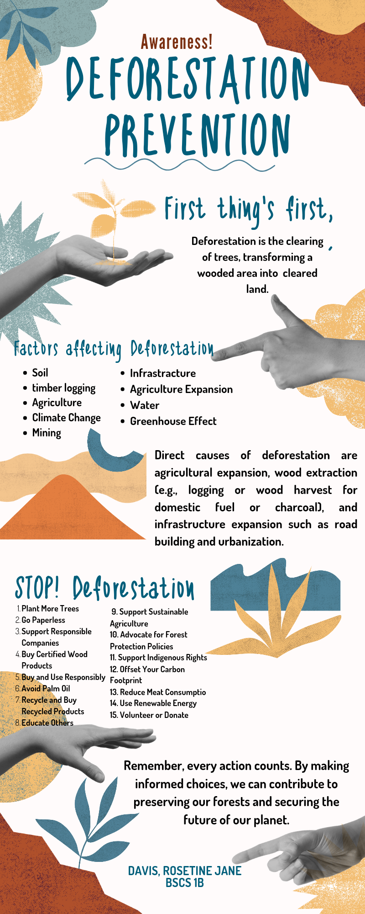

Infographic
Davis, Rosetine
Dear Mother Earth
The sense of belongingness, that we feel as it caress, the wind that sustain as best; the fire that warms us as we rest. The trees that dances as they go, the rain that flashes to and fro. the sun that glow as wherever it goes, the moon that sings for us as the night goes. I cannot help but to cry, the tears that i shed as i said goodbye, to the endless banter of today's generation i wish to never die. To never die and regret, the beauty of life i could've give, my all and let it fall, the breezes as I walk in this fainting world. As it collapsed in my hand I watched it die and reprimand i only wish for me to do my best and wish the world in blue. The world is ever changing, and so are we. I can't help but to think that 15 years from now I would be dead and what is left is the memory of what I have done. What did I do to save the world from falling apart? Does this world really need help from me? What does the world want from a lowly peasant like me? Is it really impossible for me to bring change to the world? It starts small and slow. Right now you are a nobody but maybe someday you can be somebody. We might never know, I might never know. Perhaps what I know is that lite could get to you sometimes. It could get to you. I remember whenever I felt down and I wanted to let the negative feelings out I would go outside and breathe some fresh air. Now, imagine a world without clean air. Imagine the world 56° C striking hot, you are poor and cannot even afford a single fan. Imagine that reality that could happen 15 years from now. Based on this data, until the end of October shows that the year was about 1.4 degrees Celsius above the pre-industrial 1850-1900 baseline. The past nine years, 2015 to 2023, were also the warmest on record. “Greenhouse gas levels are record high. Global temperatures are record high. Sea level rise is record high. Antarctic sea ice is record low. It’s a deafening cacophony of broken records,” said WMO Secretary-General Prof. Petteri Taalas. Tell me it is because of the animals that is why our temperature is rising at a high level. You cannot tell me otherwise, but I can tell you that we can still prevent the coming destruction from happening abruptly, we can slow it down. If we are lucky enough, we can stop it. Adapting to the challenges is proven the best strong suit humans have, and in the past decades we have been doing so. In order to bring change and adapt to circumstances, we need to first hand experience it. And that is what is happening. We are forced to adapt because of the abrupt changes due to our negligence. What are we to do? Have the government build resiliency to the arising challenges and that is what the government is trying to do. But it will not happen if we will just stand and watch the authorities do their thing. I would always say this to myself. If I want a change, I will be the change that myself wants and I will bring that change to action. It is easier said than done. But I believe that if I want the world to be saved I need to get up and do the change I want. Okay, what am I talking about, what change do we need? Is this what BBM is talking about? Let me say this once and for all, BBM is bullshit, his government is bullshit, and that is an example of doing your thing and being the change you wanted to be. If the government cannot do anything, then do something. We need change because it is necessary. In whatever area or whatever field you may it is necessary to adapt to the change. In Terms of our world, it would be a significant move if we bit ourselves into thinking that we should be the change the world is waiting to happen. You should accept that it is a long process. You should educate yourself about climate change and other factors concerning it. Get up and get your job done. Procrastination is not sexy. I obviously just made all that up because I want to prove a point, and the point is being open-minded. To the world and what revolves around it. One thing that really took me off is the fact that we can do something but we are just wasting time hustling around, underestimating the capability of nature to turn its back on us. Can you imagine if there were no trees? Can you imagine if there were no Renewable energy to sustain us, there is no clean water to hydrate us. It is very hard to think. I know that I am a big hypocrite. I am. I admit it. It is better to be one and then still not considering change. I consider myself as the main accomplice. Now it is time to bring myself into elation and do the best that I can to advocate. I never felt so noble, just now as I am writing this. I am feeling so emotional from all the realization. I would write what things I would want to happen, but I know I am not powerful enough to do that. With that, even in this lowly form I want to use my power as a global citizen to use my voice and with the knowledge I have incorporated, to shout to all the people that it is time for us to wake up.
Sincerly:
Davis Rosetine